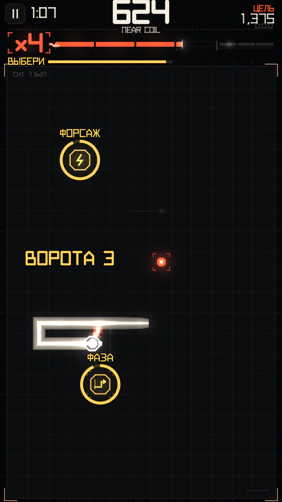
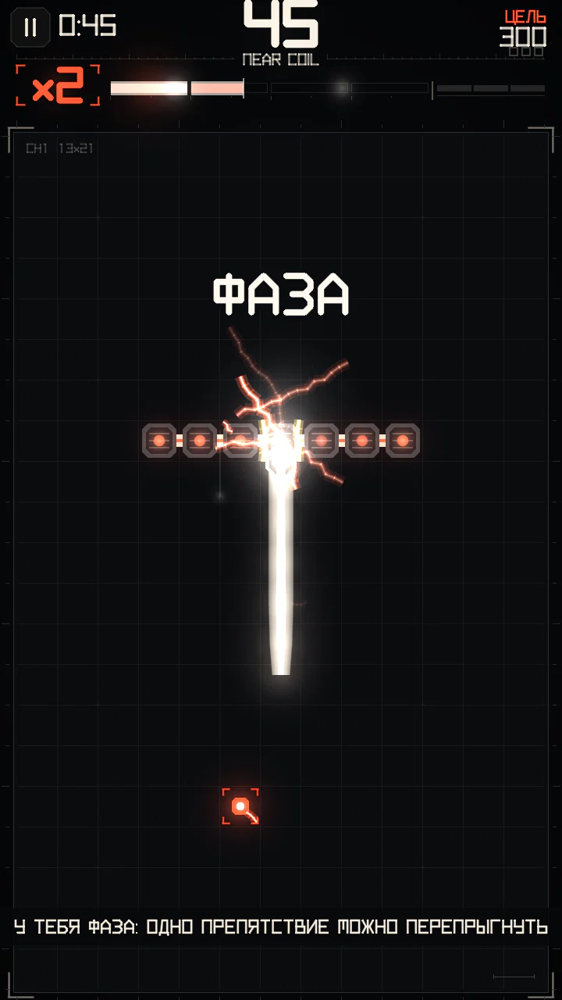
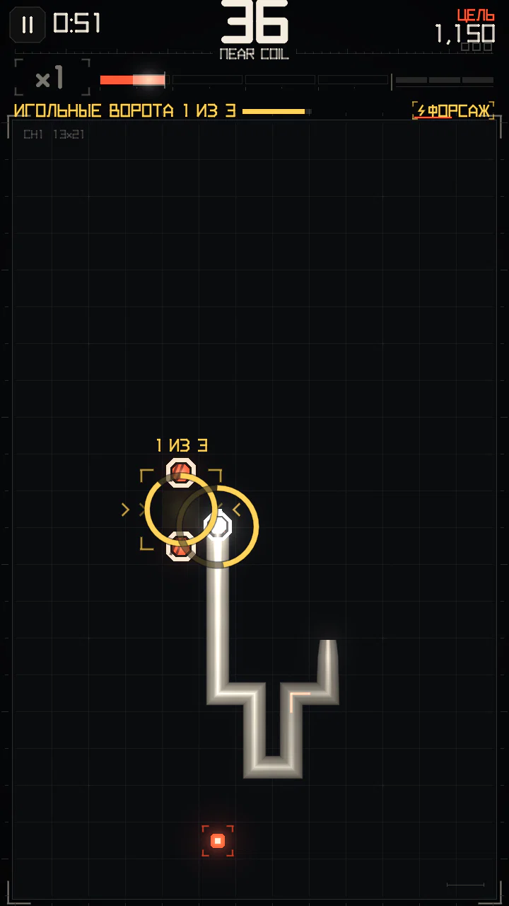
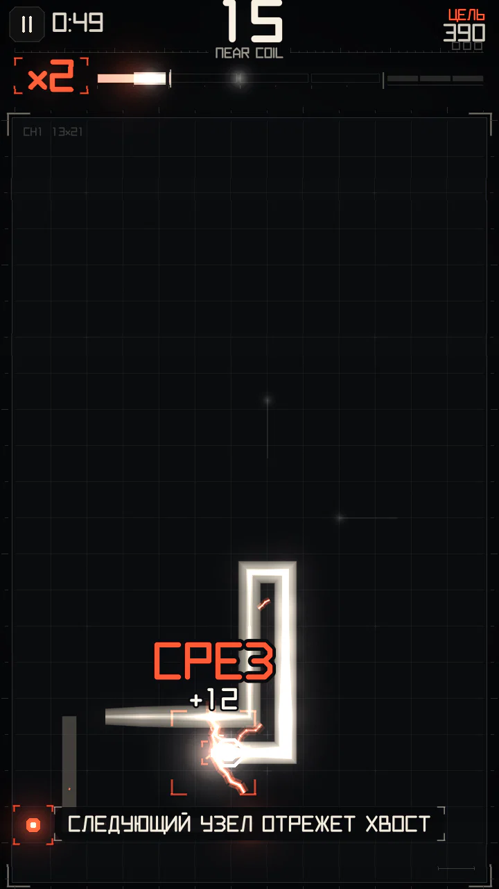

Модули
Выиграй событие — и поле предложит награду: один или два порта, в каждом модуль. Въедь в тот, который нужен. Модули не продаются, их можно только заработать в игре.
Порты (ВЫБЕРИ)


- Порты открываются после выигранного события (на уровнях кампании — если там разрешены модули). Один или два порта появляются в 4–10 клетках от головы, по возможности по разные стороны от направления движения — настоящая развилка.
- На выбор есть 75 шагов (около 11,2 с). Въехал в порт — забрал его модуль, второй порт исчезает.
- Что может выпасть: ФАЗА, если её у тебя ещё нет; ФОРСАЖ всегда; СРЕЗ, только если тело не короче 24 клеток и среза у тебя ещё нет.
- Одновременно можно держать не больше одной ФАЗЫ и одного СРЕЗА. Модуль, который у тебя есть, показан справа на полосе события.
ФАЗА


Пока у тебя есть ФАЗА, следующее столкновение с проводником не заканчивает забег: голова перепрыгивает эту одну клетку и оказывается с другой стороны.
- Работает с любым проводником: твоим телом, столбами, живыми стойками, шинами, проводами и изоляторами. Прыжок ровно на одну клетку, поэтому клетка за препятствием должна быть свободна.
- А если въехать в край поля, ФАЗА проведёт сквозь него: выйдешь с противоположной стороны, в том же ряду или столбце, с той же наградой. Заряд тратится на край, поэтому если там, где ты выходишь, тело или проводник, забег окончен.
- Проводник, за которым нет свободной клетки, по-прежнему убивает. Одна ФАЗА — одно использование: потом стены снова убивают.
- Прыжок даёт +50 очков (× множитель) и +170 заряда — используй его специально, а не только как запасную жизнь.
ФОРСАЖ


Около 8,1 с перегрузки (60 шагов):
| Эффект | Значение |
|---|---|
| Скорость | +14 % сверх прибавки множителя |
| Заряд от всего | ×1,40 |
| Очки от всего | ×1,50 |
Если взять ФОРСАЖ, пока идёт другой, его время добавится сверху.
СРЕЗ


Следующий узел, съеденный после взятия СРЕЗА, отрезает самую старую часть тела.
- Отрезается 35 % тела со стороны хвоста, но в теле всегда остаётся не меньше 6 клеток.
- Каждая отрезанная клетка разряжается в шкалу: +4 заряда за клетку.
- Освобождает место на тесном поле; цена — меньше тела, вдоль которого можно скользить.